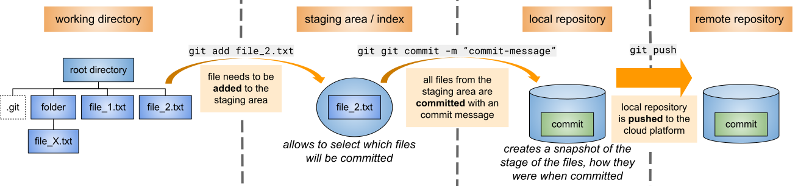

basic git
git workflow overview

initializing a local repository
explain: initialize local repository
- run the command
git init in the folder which you want to put under version control
- the hidden
.git folder is created (git stores all information it needs in that
folder)
commit messages
explain: commit message
- rules for writing a good commit message
- no more than 50 characters long
- use the imperative mood
- as if it is a command or request
- imagine that you're prefacing every commit message with the words, "This commit
will..."
- prefix commit message
add:
feat:
fix:
style:
docs:
- for changes related to documentation
refactor:
- for refactored code restructuring code without changing or adding
to its external behavior and functionality
maint:
- How often to commit?
- Commit after every ...
- ... major change
- ... addition of a new page
- ... feature
- Smaller changes ...
- ... grammar and spelling
- ... minor content changes
can be grouped together (4 to 5)
Git Basics
repository (repo)
explain: repository
- repository
- the repository is made up of the data (from the current active branch) from the working
directory and the "repository-database" from the
.git folder
- it contains all the data which has been tracked and its history
- history
- the history, contains information about ...
- the different versions of the tracked data, from its first commit till the last commit
- who has changed, added or committed what data at what time
- branches
- there can be multiple branches within the repository
- branches
- allow the development of different features independently from each other
without breaking the main project
- each branch has its own set of data and versions of that data
- the master branch:
- is usually the branch on which the project is build on
- is the only branch which is automatically generated when the repository is
initialized
Commits
explain: commits
- staging area
- stage == staging area == index == cache (they all mean the same)
- before something can be saved permanently in the repository, it needs to be staged
- the staging area contains the entire active branch and all tracked
files which have been added to it and will be included in the next commit
- git add
FILE or git
stageFILE to add new or modified
files to the staging area
- with every commit, the content of the staging-area is permanently saved in the repositories-database
- the branch and therefore its data can be later combined with another branch or reverted to its
previous stage
- head:
- the last commit in every branch is the "head" (lowercase letters)
- the last commit in the active branch is the "HEAD" (capital letters)
- checkout
- a checkout, changes the active branch into another branch
- all data in the "project-directory" is replaced with the data of the new active branch
- new files can appear, previous files be modified or disappear
- Note: before every checking out there should be a commit, otherwise data can
get lost.
- stash
- stores data temporary without committing it
- is useful when the code is not ready for an commit but you need to "checkout" to a different
branch
- merge
- combines two branches into a single branch
- happens also if two repositories are synchronized
- a merge-conflict happens when the same data has two different versions
- if the difference dose not effect each other than git can solve the conflict
- the conflict needs to be resolved manually if the case is to complicated
- the changes are saved in an new commit
- rebasing
- through merging, the local repository gets "messy" (branches are opening and closing)
- rebasing allows to straighten the local history
- tags
- commits are identified through a hexadecimal hash-code
- tags allow to mark or name commits
- is usually used to mark "milestones" or "versions"
Log & Logging
explain: Log & Logging
- git log
- the history (the sequence of commits) of one or more branches which leads to the current
stage can be viewed with git log
- it shows the hash-code for every commit
- every commit references a previous commit
- commits which are created through merging have more than one previous commit
- Note: there is no logging-file which can be referenced, it is all based on the previous
commit
- reference-log or short reflog
- contains the sequence of local commands which change the head of an branch
- is not synchronize with other repositories
- it can be used in some cases to revert wrong commands
local & remote repositories
explain: local & remote repositories
- git is communicating to remote repositories over HTTP and SSH protocols
- clone copies a external repository to the local computer
- pull gets the current version of the active branch from the remote
repository to the local repository, which can be locally merged (creates new a commit)
- push transfers local commits to the remote repository
- there should be always a pull command before a push
- in this case the local repository is up to date and there is not a complex merge required
- only the commits have to be uploaded and the indicator for the updated branch adjusted
- the simple version of merging is called "fast-forward-merge"
- the origin-repository is the remote-repository from which the project is cloned or which is
set as default-repository
- push and pull are by default referencing
origin if not otherwise specified